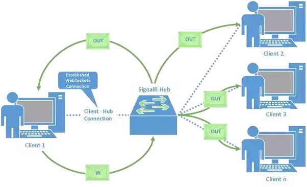
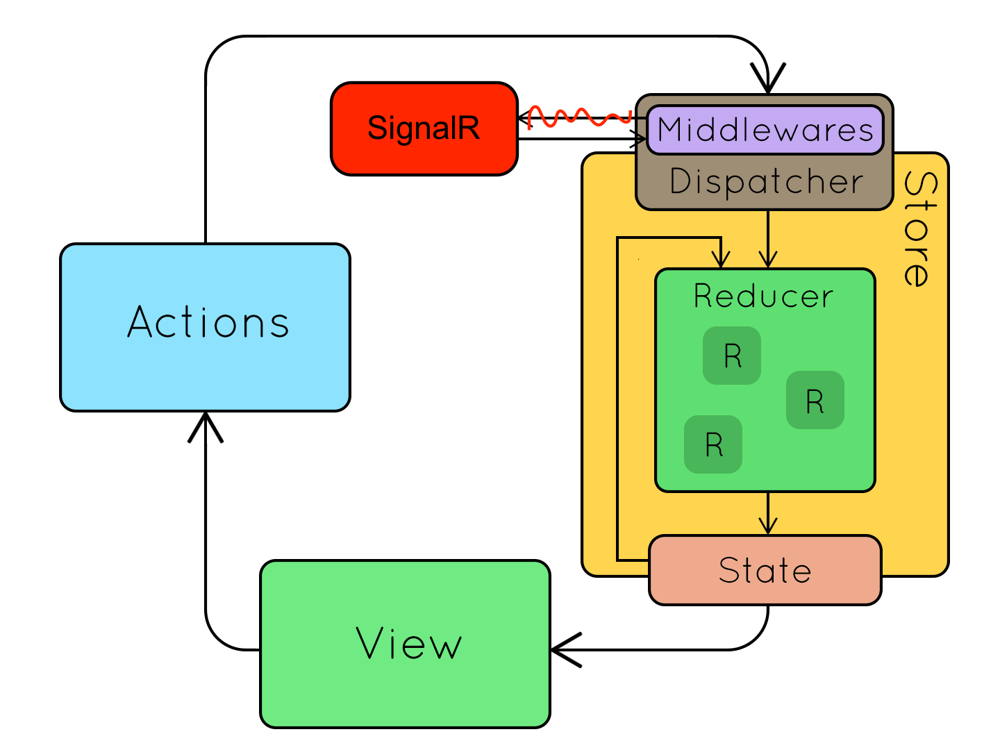
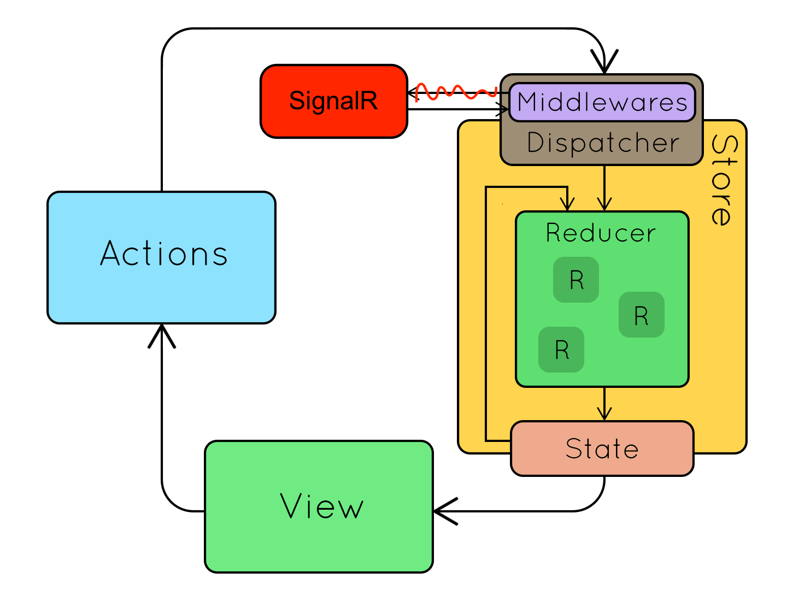

SignalR
Du WEB temps réel
Présenté par Patrick Grasseels et David Gilson
Contenu
Introduction
- Quesako ?
- Utilité
- Clients dispinibles
Côté serveur
- Hub
- Typage
Côté client
- Package NPM ?
- Fonctionnement interne
- Avantages utilisation store
Résultat final
Introduction
C'est quoi ?
Une librairie qui simplifie la création d'un web temps-réel.
Utilité du temps réel
- Edition collaborative
- Satus serveur
- Monitoring
- ...
Clients disponibles
- .NetCore – Xamarin – WPF
- Java – Android
- Javascript – Typescript
Côté serveur
Hub
Hub non typé
Task SendAsync("Method",object arg1);
Task SendAsync("Method",object arg1, object arg2, ...);
Task SendCoreAsync("Method", object arg2, object[] args);
Hub typé
public interface IChatClient
{
Task ReceiveMessage(string user, string message);
Task ReceiveMessage(string message);
}
public class StronglyTypedChatHub : Hub‹IChatClient›
{
public async Task SendMessage(string user, string message)
{
await Clients.All.ReceiveMessage(user, message);
}
public Task SendMessageToCaller(string message)
{
return Clients.Caller.ReceiveMessage(message);
}
}
Demo serveur
Côté client
@aspnet/signalr
“JavaScript and TypeScript clients for SignalR for ASP.NET Core”
ASP.NET Core SignalR == SignalR ASP.NET Core SignalR === SignalR
Compatibilité


Fonctionnement
“Abstraction d'utilisation de protocols définis dans les standards HTML5 et Comet”
WebSocket
Server Sent Events
Ajax long polling
WebSocket vs SignalR
const exampleSocket = new WebSocket("ws://www.example.com/socketserver", ...);
function sendText(content) {
var msg = { method: 'SendText', content };
exampleSocket.send(JSON.stringify(msg));
}
exampleSocket.onmessage = function(event) {
const msg = JSON.parse(event.data);
switch(msg.method) {
case 'method1': method1(msg.content); break;
}
}const connection = new signalR.HubConnectionBuilder().withUrl("/hub").build();
function sendText(content) {
connection.invoke("SendText", content);
}
connection.on("method1", (content) => method1(content));Point d'attention
// Quand on perd la connection
connection.onclose((error) => connection.start());
// Tant que la connection n'a pas pu être établie
retryWhen(errors => errors.pipe(delayWhen(val => timer(3000))));
Démo client 1
SignalR Abstract Service
SignalR Core Service
Service
View
Intégration dans un Store
 

Démo client 2
SignalR Abstract Service
SignalR Core Service
Service
Store
Bon à savoir
Scale-out
services.AddSignalR()
.AddAzureSignalR(
Configuration[
"AzureSignalR:ConnectionString"
]
);
Authentification
- Cookies
- Windows Authentication
- Bearer
ASP.NET Core
options.Events = new JwtBearerEvents
{
OnMessageReceived = context =>
{
var accessToken = context.Request.Query["access_token"];
context.Token = accessToken;
...
return Task.CompletedTask;
}
};
TypeScript
this.connection = new HubConnectionBuilder()
.withUrl(this.url, {
accessTokenFactory: () => this.loginToken
})
.build();
Choix protocols
Vous pouvez limiter les protocols à utiliser.
.withUrl(this.url, {
transport: signalR.HttpTransportType.WebSockets |
signalR.HttpTransportType.LongPolling
})
Limitations
Limitation par CPU- 1 connection = 1 hub
- Votre imagination
Question ?
Resources
Patrick Grasseels
https://www.linkedin.com/in/patrick-grasseels-a132a38David Gilson
https://www.linkedin.com/in/david-gilson-innovate